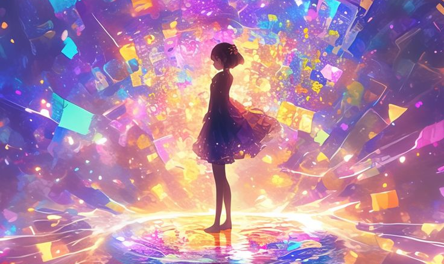
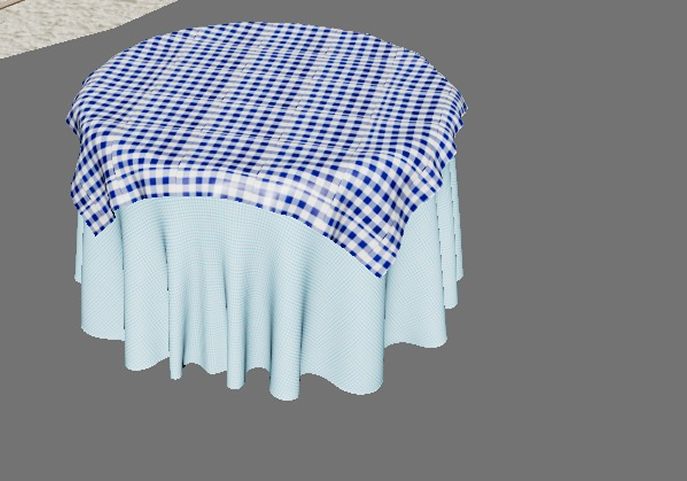
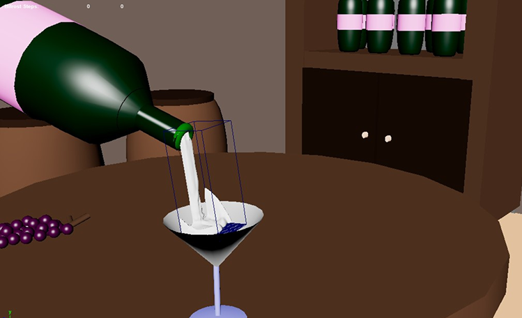
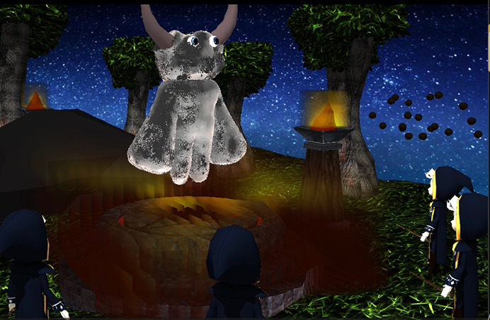
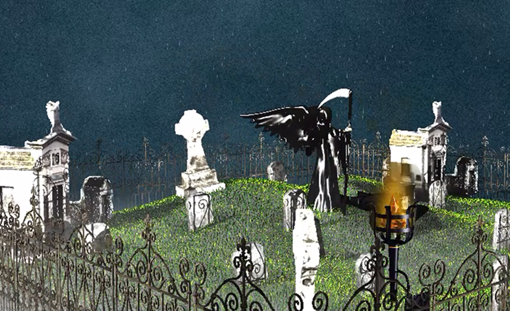

Diseñamos efectos visuales (VFX) dinámicos que dan vida a la acción mediante sistemas de partículas y simulaciones de energía. Cada efecto está desarrollado para potenciar la inmersión, logrando que cada interacción dentro del entorno virtual sea visualmente impactante y fluida.


Simulación de física de telas mediante sistemas de partículas y fuerzas de viento, logrando un movimiento fluido y orgánico que reacciona de forma realista al entorno digital.

Simulación de fluidos mediante sistemas de partículas y fuerzas físicas, logrando un flujo dinámico y orgánico que interactúa de forma realista al caer sobre un objeto en el entorno digital.

Creación de un escenario místico para la incorporación de un videojuego de fantasía, donde se aplican efectos VFX como fuego representado en las antorchas, sistema de partículas con gravedad en las rocas, así como el uso de creación de humo para enfatizar la ambientación de la escena.

Propuesta de escenario de cementerio en una ambientación nocturna con una ligera lluvia y bruma (neblina), creando todo desde maya e incorporando efectos VFX para un mejor efecto visual.